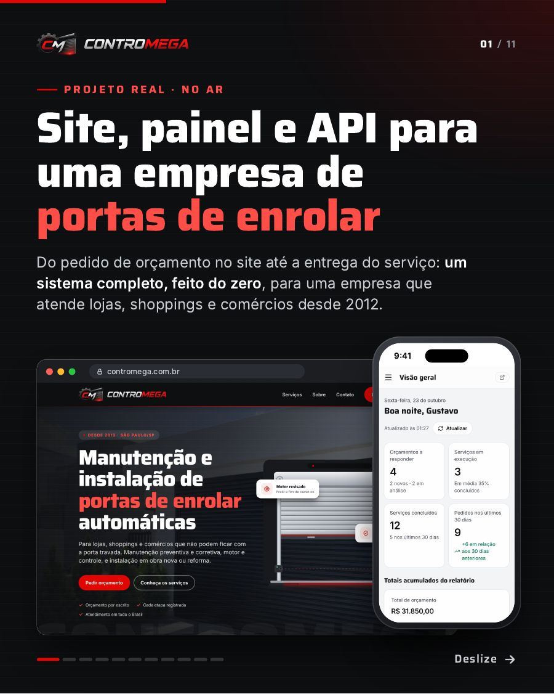
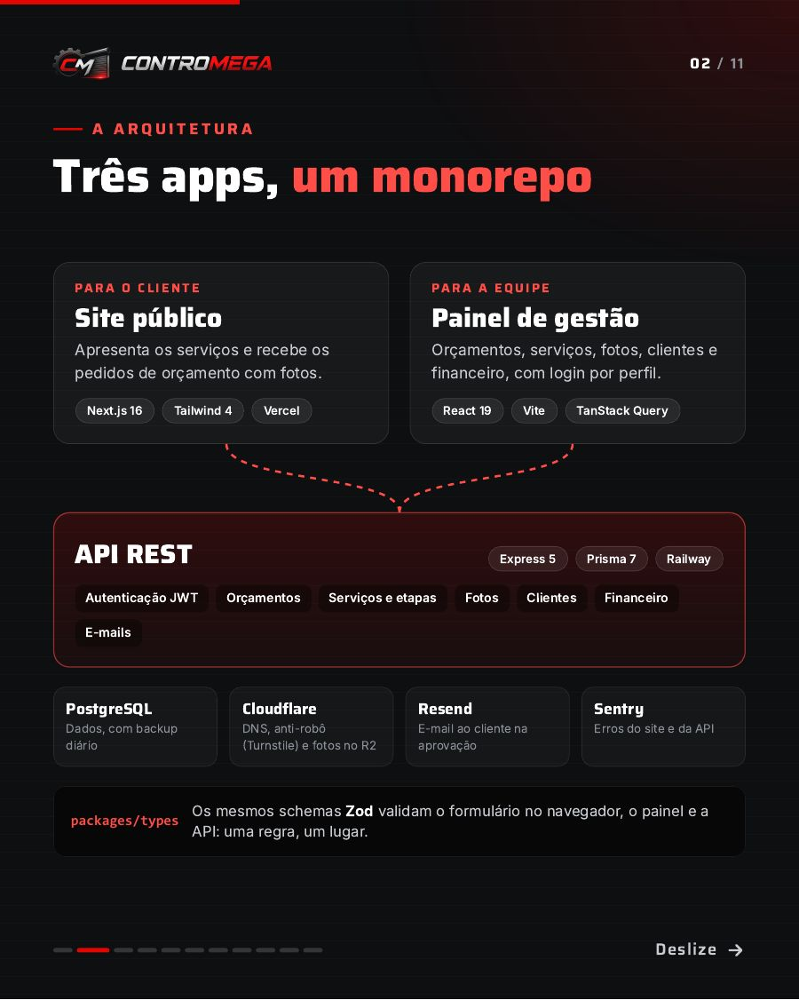
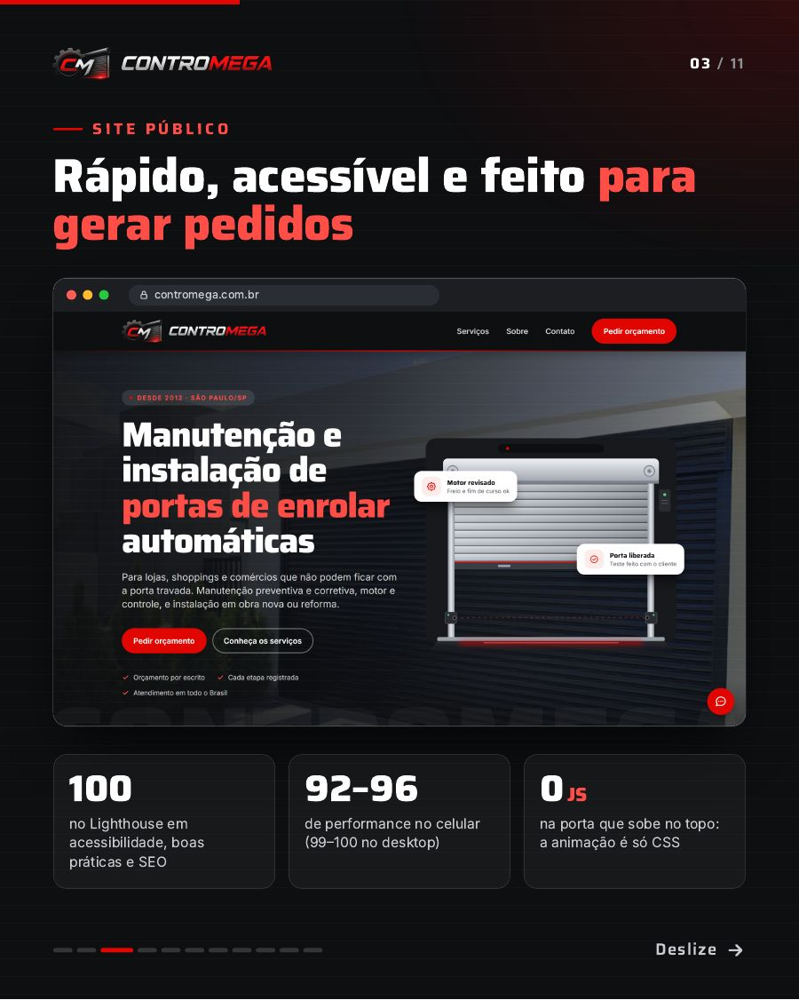
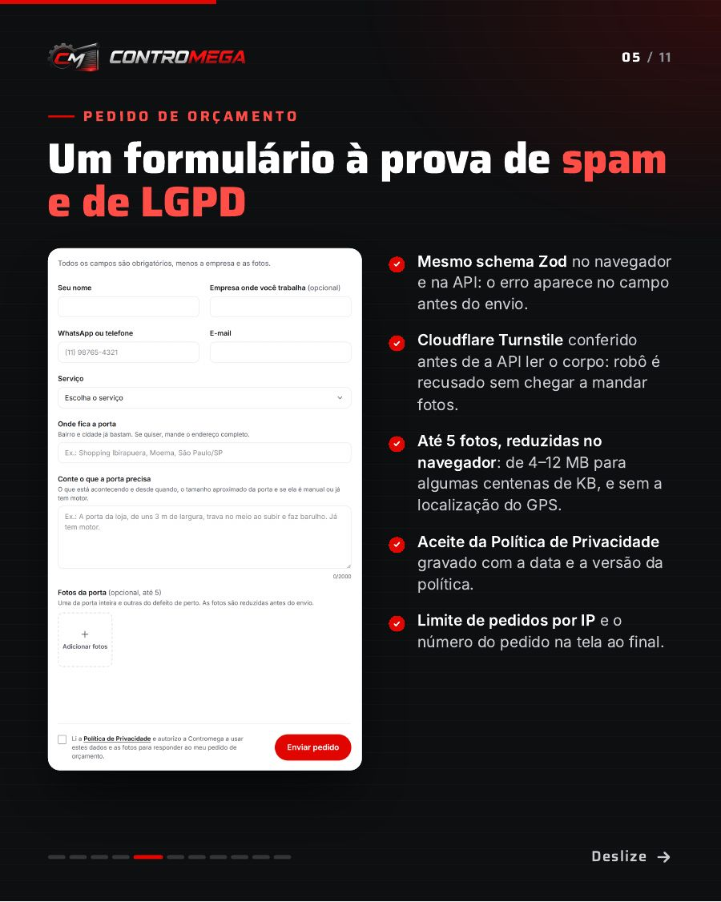
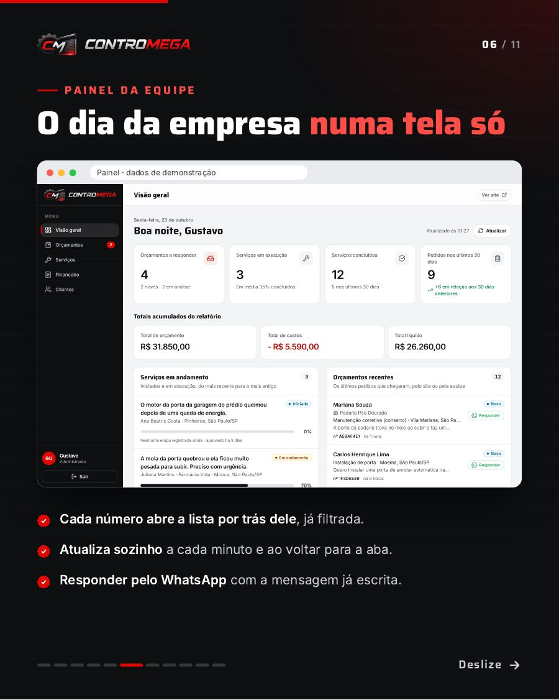
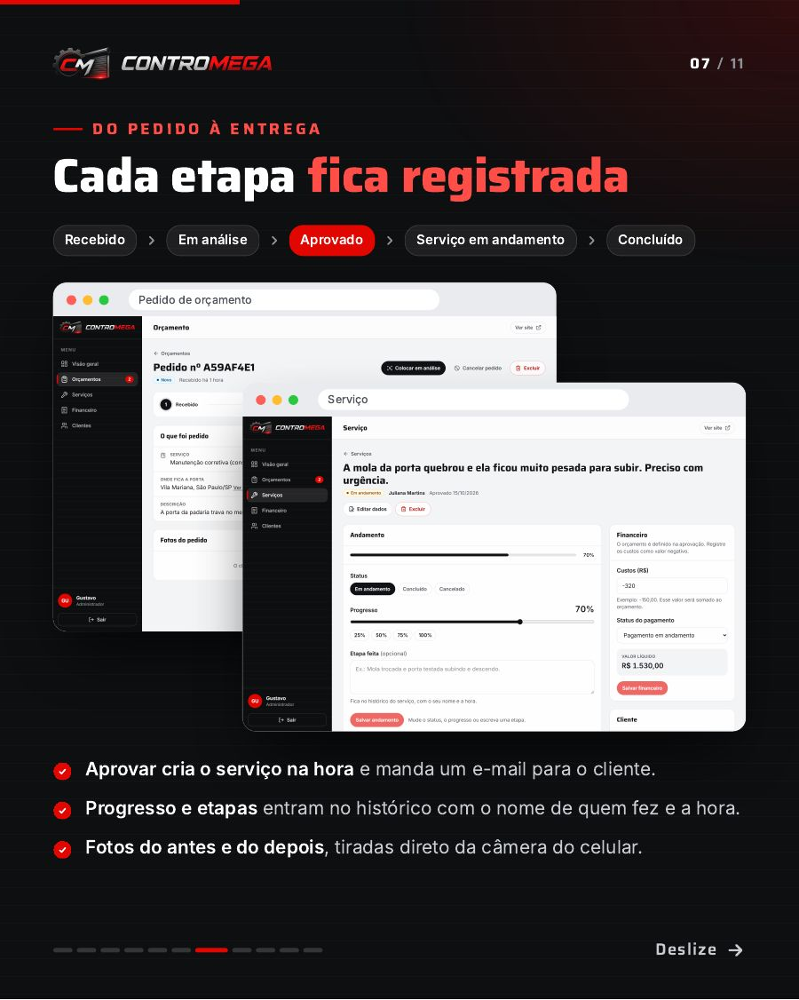
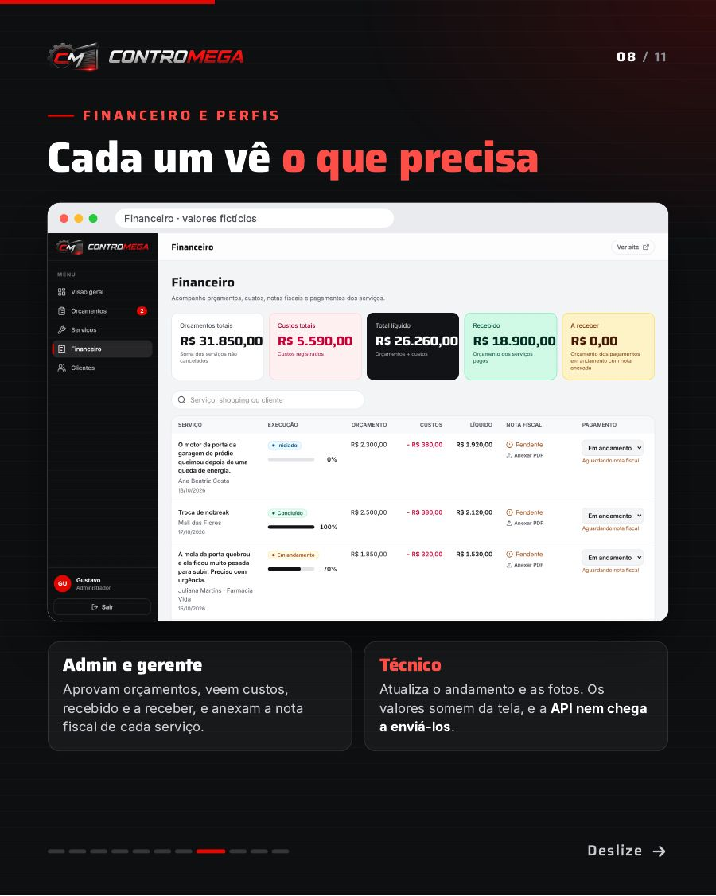
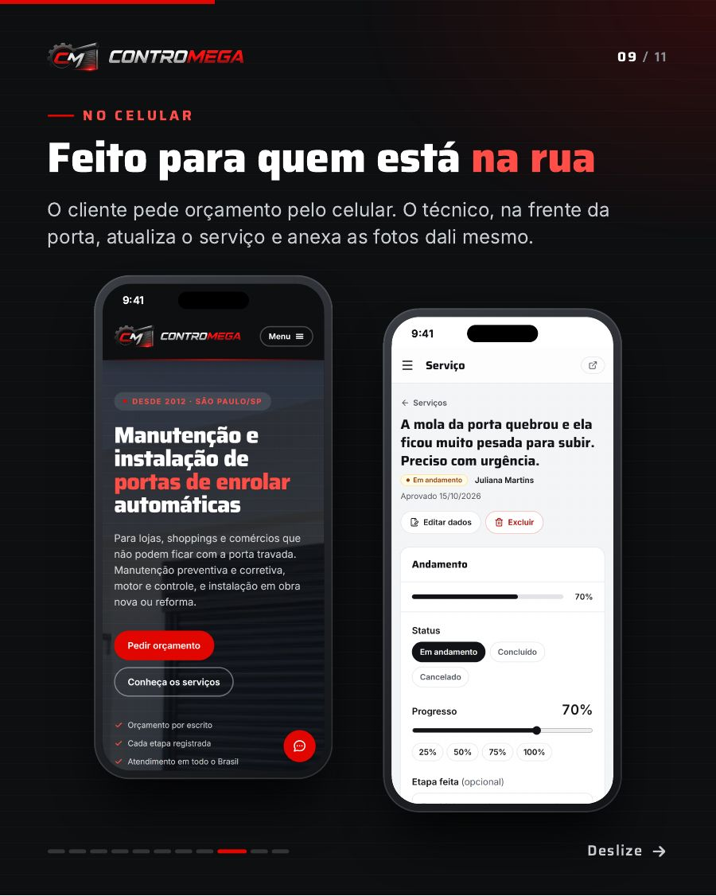
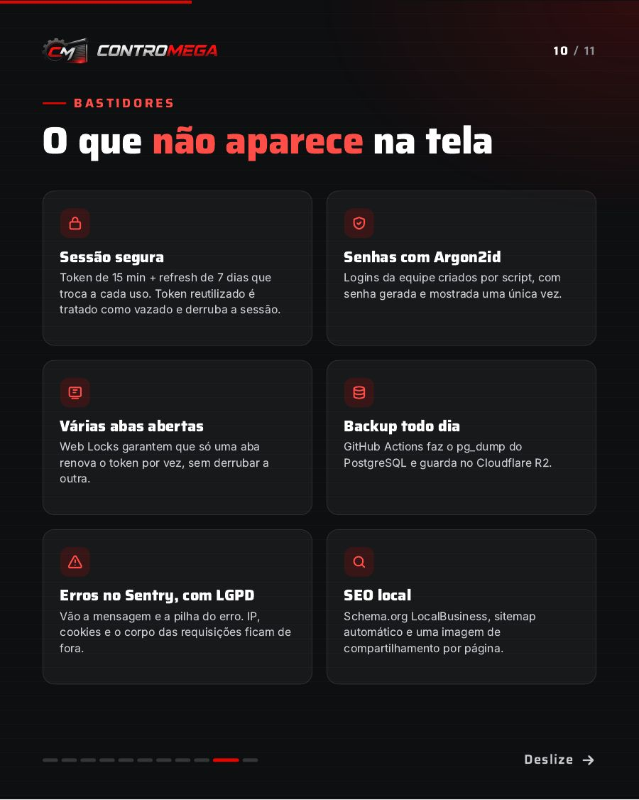
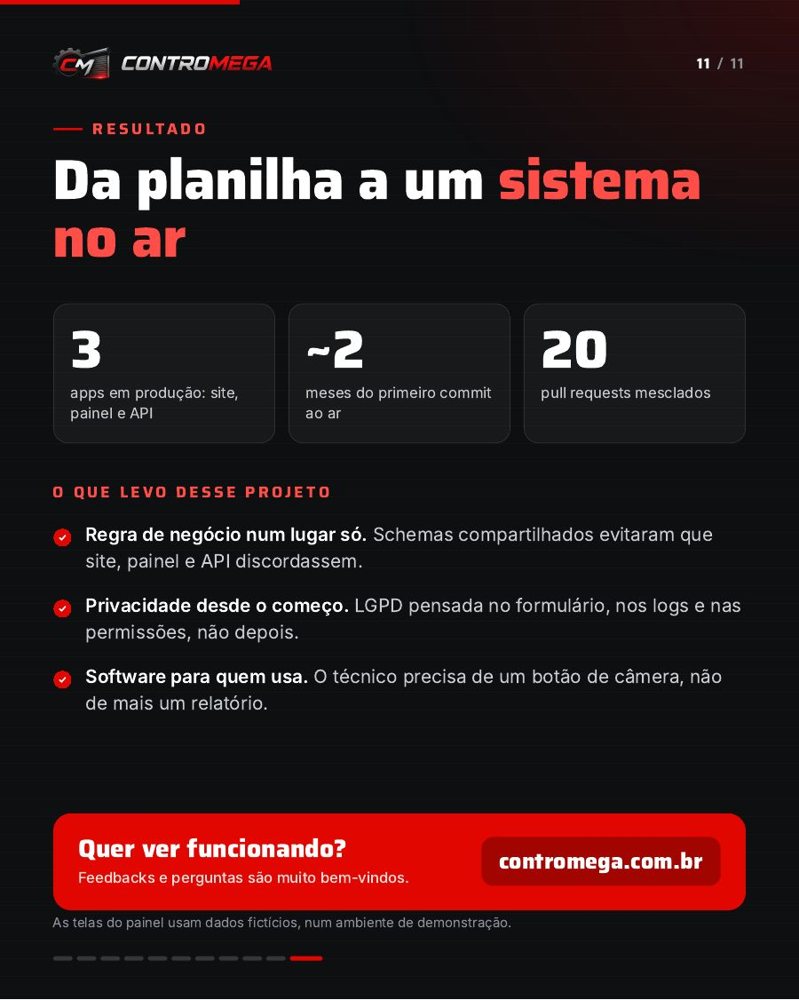

.jpeg)
Em produção
Contromega
Site, painel e API para uma empresa de portas de enrolar
Do pedido de orçamento no site até a entrega do serviço: um sistema completo, feito do zero e sozinho, para uma empresa que atende lojas, shoppings e comércios desde 2012. A empresa saiu de planilhas para um sistema no ar, usado pela equipe no escritório e pelos técnicos na rua.
- 3
- apps em produção: site, painel e API
- ~2
- meses do primeiro commit ao ar
- 20
- pull requests mesclados
- 100
- no Lighthouse em acessibilidade, boas práticas e SEO
Site público
Para o cliente. Apresenta os serviços e recebe pedidos de orçamento com fotos. Ilustrações em SVG feitas no código e animação só com CSS. Performance de 92–96 no celular.
Painel de gestão
Para a equipe. Orçamentos, serviços, fotos, clientes e financeiro, com login por perfil. Atualiza sozinho e funciona no celular do técnico.
API REST
O que conecta tudo. Autenticação JWT, orçamentos, serviços e etapas, fotos, clientes, financeiro e e-mails. Monorepo com schemas Zod compartilhados entre os três apps.
Funcionalidades
- Formulário à prova de spam e de LGPD: validação Zod no navegador e na API, Cloudflare Turnstile, limite por IP, até 5 fotos reduzidas no navegador (de 4–12 MB para centenas de KB, sem GPS) e aceite da política gravado com data e versão.
- Do pedido à entrega: Recebido, Em análise, Aprovado, Em andamento, Concluído. Aprovar cria o serviço e envia e-mail ao cliente (Resend); cada etapa fica no histórico com autor e hora.
- Financeiro e perfis: admin e gerente veem custos, recebido, a receber e notas fiscais; para o técnico, a API nem envia os valores.
- Feito para a rua: o técnico atualiza o serviço e anexa fotos de antes e depois direto da câmera do celular.
Bastidores
- Sessão segura: token de 15 min + refresh de 7 dias rotativo; token reutilizado é tratado como vazado e derruba a sessão.
- Senhas com Argon2id e Web Locks para várias abas renovarem o token sem conflito.
- Backup diário: GitHub Actions faz pg_dump do PostgreSQL e guarda no Cloudflare R2.
- Monitoramento com Sentry sem IP, cookies ou corpo das requisições (LGPD).
- SEO local: Schema.org LocalBusiness, sitemap automático e imagem de compartilhamento por página.
Telas do projeto deslize para ver mais










As telas do painel usam dados fictícios, num ambiente de demonstração.